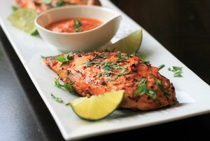

Chipotle Grilled Chicken Breasts

These spicy, Mexican-inspired grilled chicken breasts will turn any backyard BBQ into a fiesta!
This is my go to dish when inviting friends over for a BBQ. People love it. I love it. Even friends that don't like spicy food love it! I stumbled upon the recipe while browsing for something new to meal prep and once I tasted that homemade chipotle flavor I have not looked back. This is the one. There are no better recipes than this one.
Ingredients
- 1 (7ounce) can chipotle peppers in adobo sauce
- 1 small onion, chopped
- 2 cloves, peeled
- 3 tablespoons olive oil
- 2 limes, juiced, divided
- 1 teaspoon ground cumin (optional)
- 1 teaspoon dried Mexican oregano (optional)
- 1 teaspoon salt, or to taste
- 1/8 cup water, or as needed
- 4 skinless, bonesless chicken breast halves, butterflied
1 bunch fresh cilantro, chopped
Steps
- Combine 1 to 5 chipotle peppers with their sauce, onion, garlic, olive oil, juice of 1 lime, cumin, oregano, and salt in a food processor. Blend until smooth, adding water as needed if too thick. Reserve a small amount of marinade mixture to serve with grilled chicken.
- Combine chicken with marinade in a plastic storage bag. Refrigerate for 30 minutes to 1 hour.
- Preheat an outdoor grill for medium heat and lightly oil the grate. Remove chicken from marinade and discard excess.
- Place chicken breasts on the preheated grill and cook until no longer pink in the center and juices run clear, about 8 minutes per side, being careful not to overcook.
- Remove chicken from the grill and transfer to a plate. Squeeze juice of remaining lime onto chicken and garnish with cilantro. Serve with reserved marinade mixture.